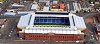

Dois lugares bastante conhecidos e acarenhados pela populaçao de glasgow sao o estadio dos Rangers chamado Ibrox Stadium e a Catedral Santa Maria de Glasgow
 Estadio dos Rangers (IBROX)
Catedral Emblematica de Glasgow
One Cigarette
Edwin Morgan
No smoke without you, my fire.
After you left,
your cigarette glowed on in my ashtray
and sent up a long thread of such quiet grey
I smiled to wonder who would believe its signal
of so much love. One cigarette
in the non-smoker's tray.
As the last spire
trembles up, a sudden draught
blows it winding into my face.
Is it smell, is it taste?
You are here again, and I am drunk on your tobacco lips.
Out with the light.
Let the smoke lie back in the dark.
Till I hear the very ash
sigh down among the flowers of brass
I'll breathe, and long past midnight, your last kiss.